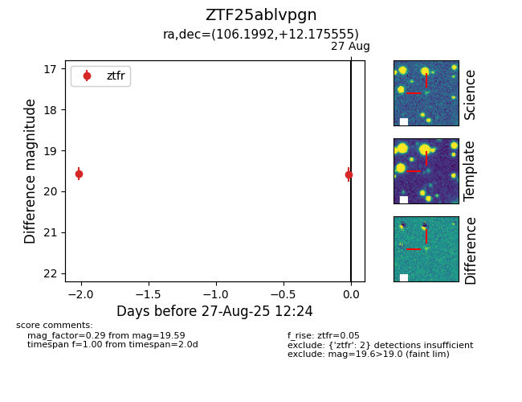

Target ZTF25ablvpgn at 2025-08-27 12:24, see:
FINK: fink-portal.org/ZTF25ablvpgn
Lasair: lasair-ztf.lsst.ac.uk/objects/ZTF25ablvpgn
ALeRCE: alerce.online/object/ZTF25ablvpgn
alt names
ZTF25ablvpgn (ztf,fink)
coordinates:
equatorial (ra, dec) = (106.1992,+12.17555)
galactic (l, b) = (203.5212,+8.44455)
photometry
last ztfr=19.59
2 ztfr detections
